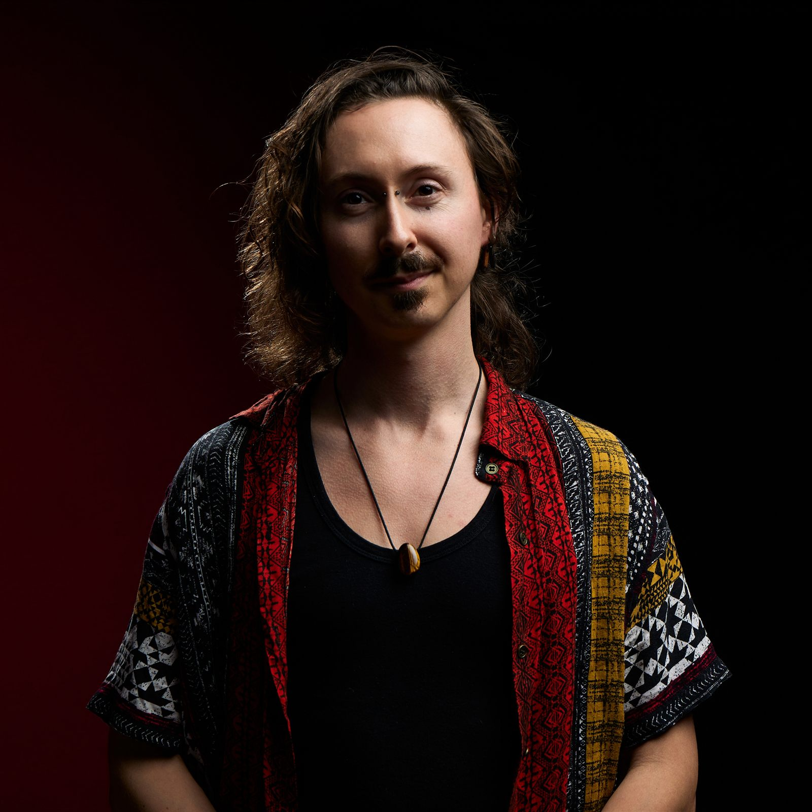

Marco Grancelli
Voz, guitarras, composición y arreglos
Argentino, de Buenos Aires. Fue parte del dúo Aguamadera, con el que tocó en el showcase oficial de WOMEX 2022. Aprendió el folclore de primera mano, viajando por Perú, Chile y el Norte argentino. En 2025 publicó «Camino Trunco», su primer disco solista.